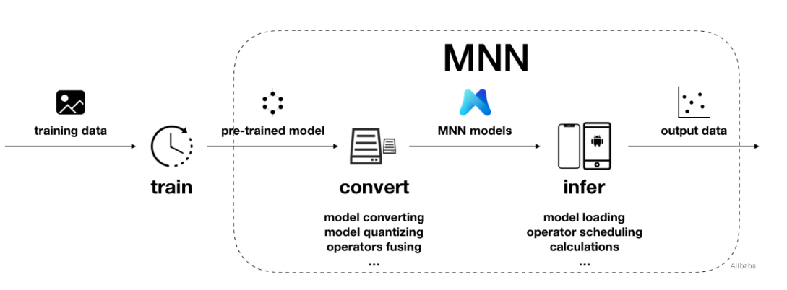
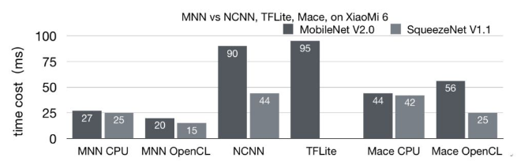
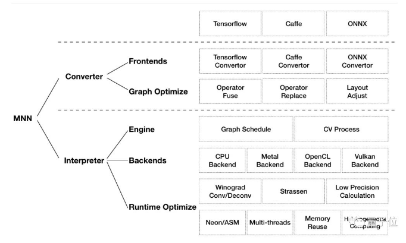
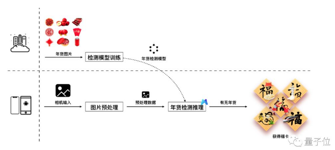

Flow

Concept (for inference)
摘要：MNN已经用于阿里手机淘宝、手机天猫、优酷等20多个应用之中，
覆盖直播、短视频、搜索推荐、商品图像搜索、互动营销、权益发放、安全风控等场景。
开源自家轻量级的深度神经网络推理引擎MNN（Mobile Neural Network）
用于在智能手机、IoT设备等端侧加载深度神经网络模型，进行推理预测
Android方面以小米6为例，MobileNet V2上耗费时间约为27毫秒，
SqueezeNet V1.1上耗费约为25毫秒，领先业界至少30%；

Functionality
MNN的两大功能与四大特点
(1) 模型转换部分帮助开发者兼容不同的训练框架
当前，MNN已经支持Tensorflow(Lite)、Caffe和ONNX，
PyTorch/MXNet的模型可先转为ONNX模型再转到MNN。
而且，也能通过算子融合、算子替代、布局调整等方式优化图
可以看到MNN有自己定義他的model format(.mnn)

(2) 计算推理部分致力于高效完成推理计算
为了更好地完成对模型的加载、计算图的调度，以及各计算设备下的内存分配、Op实现等任务。
他们在MNN中应用了多种优化方案，包括在卷积和反卷积中应用Winograd算法、
在矩阵乘法中应用Strassen算法、低精度计算、多线程优化、内存复用、异构计算等
=> 有vulkan ?
=> 有apple metal ?
=> 從下圖可以看到他的frontend可以接TF/Caffe/ONNX
然後再convert to MNN format

Features
(1) 轻量性：针对端侧设备特点深度定制和裁剪，无任何依赖，可以方便地部署到移动设备和各种嵌入式设备中。
Android platform: core so size is about 400KB, OpenCL so is about 400KB, Vulkan so is about 400KB
(2) 通用性：支持Tensorflow、Caffe、ONNX等主流模型文件格式，支持CNN、RNN、GAN等常用网络。
Supports 86 Tensorflow ops, 34 Caffe ops; MNN ops: 71 for CPU,
55 for Metal, 29 for OpenCL, and 31 for Vulkan.
Supports hybrid computing on multiple devices.
Currently supports CPU and GPU. GPU op plugin can be loaded dynamically
to replace default (CPU) op implementation.
=> 所以有做GPU custom OP
(3) 高性能：不依赖任何第三方计算库，依靠大量手写汇编实现核心运算，充分发挥ARM CPU的算力。
比如，在iOS设备上，可以开启GPU加速（Metal），常用模型上快于苹果原生的CoreML。
Convolution and transposition convolution algorithms are efficient and stable.
The Winograd convolution algorithm is widely used to better symmetric convolutions such as 3x3 -> 7x7
Additional optimizations for the new architecture ARM v8.2 with half-precision calculation support
=> 有對ARMv8.2 FP16優化?
(4) 易用性：有高效的图像处理模块，覆盖常见的形变、转换等需求，一般情况下，无需额外引入libyuv或opencv库处理图像。 => 有CV function ?
MNN不仅支持回调机制，可以在网络运行中插入回调，提取数据或者控制运行走向；
还支持只运行网络中的一部分，或者指定CPU和GPU间并行运行。
Example
手机淘宝春节活动：扫年货，集五福
2019年春节期间，
=> 淘宝通过扫年货的方式加入到了阿里“集五福”活动之中。
具体的使用场景是，
=> 通过扫一扫商品识别能力，来识别红色年货，并分析"照片中有年货"的概率，根据概率来发放相关权益

首先，为了扫描年货，淘宝在服务端用百万张年货图片训练出了一个可以鉴别年货的深度神经网络模型。
接下来，就需要MNN发挥作用了。
用户通过相机扫描年货时，淘宝会获取相机中的照片数据。然后，对照片做预处理，包括图片的缩放、颜色空间的转换等。
离青说，扫年货是一个基于相机的应用场景，使用云端AI会消耗用户大量的流量去传输逐帧照片、
服务端的计算资源，同时响应速度也会取决于网络状况。
而MNN，可以通过端侧AI，避免了网络开销，使整体体验流畅、稳定
Comment
今年3月份正式宣布加入阿里的框架大牛贾扬清，在MNN项目开源评审时也给出了自己的建议。
在贾扬清看来，与Tensorflow、Caffe2等同时覆盖训练和推理的通用框架相比，
MNN更注重在推理时的加速和优化，解决在模型部署的阶段的效率问题，从而在移动端更高效地实现模型背后的业务。
这和服务器端TensorRT等推理引擎的想法不谋而合。
离青说，这样的转变，让MNN有了更切合使用场景的定位，对于其进一步发展，和为开发者服务，都有很大的帮助
=> 所以就是走inference